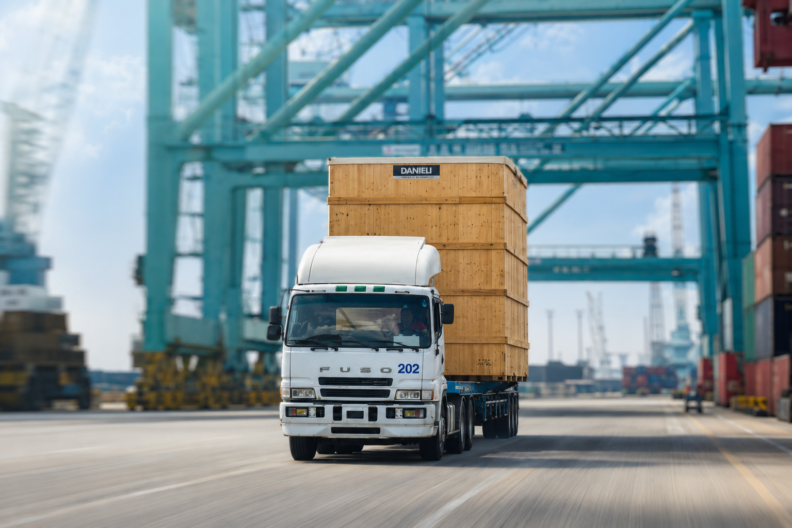

CONTAINER SERVICES
世新貨櫃企業
成立於 1986 年，主力於空櫃儲轉及貨櫃維修清洗服務，累積豐富的驗櫃技術與維修專業團隊。
服務項目
- 貨櫃修理與保養
- 貨櫃噴砂、除銹、噴漆與清洗
- 貨櫃車架整修


CONTAINER SERVICES
成立於 1986 年，主力於空櫃儲轉及貨櫃維修清洗服務，累積豐富的驗櫃技術與維修專業團隊。
ENERGY SERVICES
自 2001 年起跨足油品市場，持續朝油品銷售與綠能永續方向發展，提供便利且多元的能源服務。

SPORTS & LEISURE
提供休閒、娛樂與社交聯誼的場所，作為企業員工與社區交流的重要空間。

MEDIA & CULTURE
深入新聞，秒懂台灣，秒懂全世界
《太報》於 2017 年誕生，2018 年正式登記成立太報文化事業股份有限公司，致力於以深度、解釋性的視角提供新聞與人文內容。
太報 TaiSounds 堅持公正報導，關注台灣與國際即時新聞、政治財經、社會議題、體育及文化娛樂。
前往太報官網（開啟新分頁）OVERSEAS SOLUTIONS
延伸海外市場，提供港機設備銷售、保固維修與售後技術支援，建立完整的設備服務能力。